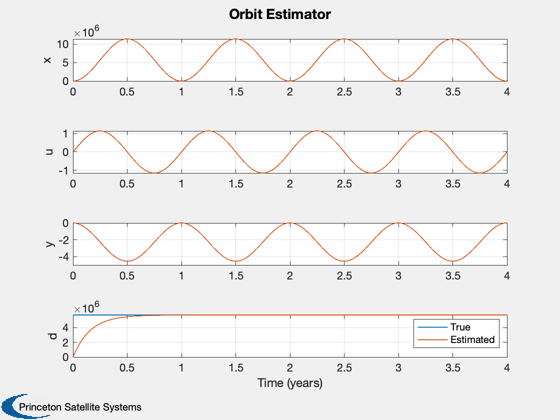

Demonstrates orbit disturbance estimation using linearized equations.
This uses the linearized orbit equations in-plane. A radial disturbance is modeled and estimated. The equations are normalized so that the derivative is respect to wo*t instead of t. This improves the numerical properties of the state transition matrix which otherwise would cause DQCE to fail. DQCE has an inverse in it which is not particularly robust numerically. Generally, this kind of scaling is always a good idea. ------------------------------------------------------------------------- See also C2DZOH, DQCE, Plot2D, TimeLabl, LinOrbNormalized -------------------------------------------------------------------------
Contents
%-------------------------------------------------------------------------- % Copyright (c) 2002 Princeton Satellite Systems, Inc. % All rights reserved. %-------------------------------------------------------------------------- dT = 10000; % sec wo = 2*pi/(86400*365.25); % Earth orbit rate (1 rev/year) nYears = 4; dT = wo*dT;
The linearized orbit model
%--------------------------- [a, b, c, d] = LinOrbNormalized; % Normalize it
Just use the in-plane dynamics
%-------------------------------
k = [1 4 5];
a = a(k,k);
b = b(k,1);
Estimator
%---------- aE = a; aE(:,4) = [0;1;0]; aE(4,4) = 0; bE = b; bE(4,1) = 0; cE = eye(3,4); [aE, bE] = C2DZOH( aE, bE, dT ); % We don't need bE kE = DQCE( aE, eye(size(aE,1)), cE, 10*eye(4), eye(3) );
These better be in the unit circle
%----------------------------------- eigD = abs(eig( aE - kE*cE )) nSim = floor(nYears*365.25*86400*wo/dT); % 4 years xPlot = zeros(8,nSim);
eigD =
0.99801
0.084852
0.084852
0.08392
Initial conditions
%------------------- x = zeros(3,1); xE = [10;0;0;0]; % The disturbance which is solar pressure at 1 au on a
100-by-100 m^2 solar sail with a mass of 200 kg
%----------------------------------------------------- u = 1e4*(1358/3e8)*1e-3/(200*wo^2); % km
Convert plant to discrete time
%------------------------------- [a, b] = C2DZOH( a, b, dT ); for k = 1:nSim xPlot(:,k) = [x;u;xE]; y = x; x = a*x + b*u; xE = aE*xE + kE*(y - cE*xE); end
Convert velocity to km/sec
%---------------------------
xPlot([2 3 6 7],:) = xPlot([2 3 6 7],:)*wo;
Generate reasonable time labels
%-------------------------------- [t,tL] = TimeLabl( (0:(nSim-1))*dT/wo ); Plot2D( t, xPlot, tL, ['x';'u';'y';'d'],'Orbit Estimator','lin',['[1 5]';'[2 6]';'[3 7]';'[4 8]'] ); legend('True','Estimated') %-------------------------------------- % PSS internal file version information %--------------------------------------